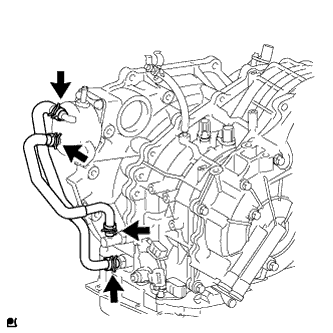
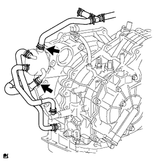
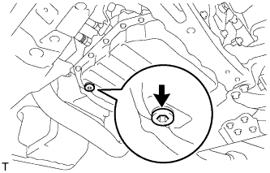
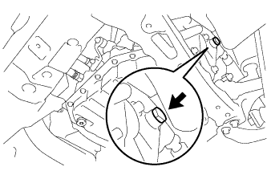
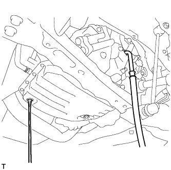
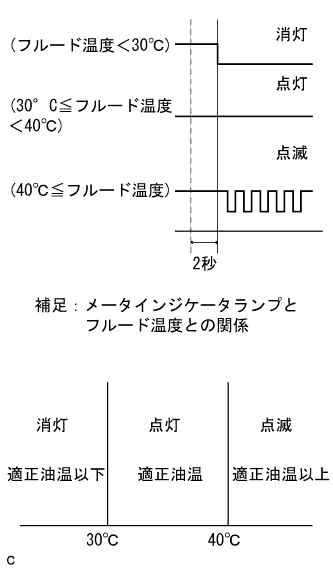

Transmission Oil Cooler Assembly Installation |
| 1. Install Oil Cooler |
 |
Install the oil cooler with the 3 bolts.
| 2. Install Oil Cooler Hose |
 |
Install the 2 oil cooler hoses to the oil cooler with the 4 clamps.
| 3. Connect Water Bypass Hose |
 |
Connect the 2 water bypass hoses to the oil cooler with the 2 clamps.
| 4. Connect Radiator Inlet Hose |
 |
Connect the radiator inlet hose with the clamp.
| 5. Add Coolant (Toyota Genuine Super Long Life Coolant) |
Close the radiator drain cock plug.
Close the cylinder block drain cock plug.
 |
Fill coolant of the specified concentration up to the B line of the radiator reserve tank.
After installing the reservoir tank cap, warm up the engine until the thermostat opens. (A)
After warm-up, repeat the cycle of 3000rpm engine speed for 5 seconds ←→ idling for 45 seconds 8 times or more (7 minutes or more). (B)
Stop the engine and wait until the coolant cools down, and if the level is below LOW, add coolant of the specified concentration through the filler again and adjust it to between FULL and LOW. (C)
Repeat steps (A) to (C) until the coolant level in the radiator reservoir tank stops dropping.
When the level stops dropping, add coolant of the specified concentration through the filler again to adjust the coolant level in the radiator reservoir tank to between FULL and LOW.
| 6. CVT Fluid Refilling, Inspection and Adjustment |
Vehicle Condition Check
Work Content Check
Refer to the work flow below and follow the procedure.

Add Fluid [*1]
Keeping the vehicle level, lift it up.
Remove engine under cover No.1.
Remove the engine under cover rear LH.
 |
Using a socket hexagon wrench 6, remove the overflow plug.
 |
Using a socket hexagon wrench 6, check that the overflow tube is tightened to the specified torque.
 |
Remove the refill plug.
 |
Add fluid through the refill hole until fluid flows out of the overflow.
Using a socket hexagon wrench 6, temporarily tighten the overflow plug.
Add the specified amount of fluid through the refill hole.
| Related Work | Refill Amount (Reference) | |
|---|---|---|
| When the oil pan is removed/installed, when the drive shaft is removed and when an oil seal is replaced | 1.9L | |
| When the torque converter assembly is removed and when K112F CVT oil seal No. 1 is replaced | 3.6L | |
Temporarily tighten the refill plug.
Lower the vehicle.
Add Fluid [*2]
Keeping the vehicle level, lift it up.
Remove engine under cover No.1.
Remove the engine under cover rear LH.
Remove the refill plug.
Add the specified amount of fluid through the refill hole.
| Related Work | Refill Amount (Reference) | |
|---|---|---|
| When the oil cooler and cooler hoses have been removed | 0.4L | |
| When oil seepage, etc. has been repaired | 0.4L | |
| When the transaxle assembly has been replaced (new torque converter assembly used) | 6.2L | |
| When the transaxle assembly has been replaced (torque converter assembly reused) | 5.6L | |
Temporarily tighten the refill plug.
Lower the vehicle.
Switching to Oil Temperature Detection Mode (with TC Terminal Shorted) [*3]
Turn IG ON.
Turn OFF the switches for the air conditioning, audio system, etc.
Turn IG OFF.
 |
Using SST, connect terminals 13 (TC) and 4 (CG) of DLC3.
Start the engine.
Slowly move the shift lever from P to D, then shift it back to P.
 |
Switch to oil temperature detection mode.
| Oil Temperature Detection Mode Switching Procedure |
|---|
| Perform the N - D operation within 1.5 seconds |
| Perform the above operation continuously for 6 seconds or more |
 |
The meter indicator light [D] illuminates for 2 seconds and then goes off.
 |
Depending on the fluid temperature, the meter indicator light comes on, goes off or blinks.
Fluid Temperature Adjustment (with TC Terminal Shorted) [*4]
Move the shift lever to P.
|
Disconnect terminals 13 (TC) and 4 (CG) of DLC3.
To raise the CVT fluid temperature, warm up the engine at idle.
|
As soon as the meter indicator light [D] illuminates, lift up the vehicle.
Switching to Oil Temperature Detection Mode (Using SST (TaSCAN)) [*5]
Connect SST (TaSCAN) to DLC3.
Start the engine with the switches for the air conditioning, audio system, etc. turned OFF.
Select the Active Test (TC terminal ON), and with the A/T oil temperature displayed, turn the TC terminal ON.
Slowly move the shift lever from P to D, then shift it back to P.
 |
Switch to oil temperature detection mode.
| Oil Temperature Detection Mode Switching Procedure |
|---|
| Perform the N - D operation within 1.5 seconds |
| Perform the above operation continuously for 6 seconds or more |
|
The meter indicator light [D] illuminates for 2 seconds and then goes off.
Depending on the fluid temperature, the meter indicator light comes on, goes off or blinks.
Fluid Temperature Adjustment (Using SST (TaSCAN)) [*6]
Move the shift lever to P.
Turn the TC terminal from ON to OFF.
To raise the CVT fluid temperature, warm up the engine at idle.
|
As soon as the meter indicator light [D] illuminates, lift up the vehicle.
Checking Fluid Level [*7]
Using a socket hexagon wrench 6, remove the overflow plug.
Check the fluid condition.
If it overflows, go to step [*8]
If it does not overflow, go to step [*9]
Adjusting Fluid Level (When Overflowing) [*8]
 |
When the fluid flow changes from a thin stream to drips, fully tighten the overflow plug with a new gasket.
Fully tighten the refill plug with a new gasket.
Install the engine under cover rear LH.
Install the engine under cover No.1.
Lower the vehicle.
Turn IG OFF and disconnect SST (TaSCAN).
Refilling Fluid (When Not Overflowing) [*9]
Remove the refill plug.
Add fluid through the refill hole until fluid flows out of the overflow.
 |
When the fluid flow changes from a thin stream to drips, fully tighten the overflow plug with a new gasket.
Fully tighten the refill plug with a new gasket.
Install the engine under cover rear LH.
Install engine under cover No.1.
Lower the vehicle.
Turn IG OFF and disconnect SST (TaSCAN).
| 7. Inspect for Coolant (Toyota Genuine Super Long Life Coolant) Leaks |
 |
Fill the radiator with coolant and install a radiator cap tester.
Warm up the engine.
118kPa{1.2kgf/cm2Pump it to } and check that the pressure does not drop.
| 8. Inspect for CVT Fluid Leaks |
| 9. Install Radiator Upper Air Deflector |
Install the radiator upper air deflector with the 8 clips.
| 10. Install Engine Under Cover NO.1 |
Install the engine under cover No.1 with the 6 bolts and 7 clips.